第24章：用苹果认证登录¶
在前几章中，你学到了如何用Google和GitHub来认证用户。在本章中，你将看到如何让用户使用Sign in with Apple来登录。
Sign in with Apple¶
苹果在2019年推出了Sign in with Apple，作为一种以隐私为中心的认证用户的方式，在你的应用程序中。它允许你将证明用户身份的工作卸载给苹果，并消除了存储用户密码的需要。如果你在你的应用程序中使用任何其他第三方认证方法--如GitHub或谷歌--那么你也必须提供Sign in with Apple。Sign in with Apple还为用户提供了额外的隐私保护，例如可以隐藏他们的真实姓名或电子邮件地址。
Note
要完成本章，你需要一个付费的苹果开发者账户来设置所需的标识符和配置文件。
在iOS上用Sign in with Apple¶
以下是在iOS上使用Sign in with Apple认证用户的方法。
iOS应用程序使用ASAuthorizationAppleIDButton来显示按钮并启动登录流程。- 当用户完成
Sign in with Apple流程时，iOS会返回一个ASAuthorizationAppleIDCredential给你的应用程序。这包含一个JSON Web Token（JWT）。 - 应用程序将
JWT发送到服务器--本例中为TIL Vapor应用程序。然后，服务器验证该令牌。 - 如果用户是新的，服务器会创建一个用户账户。
- 然后，服务器将用户签入。你将返回一个
Token给iOS应用程序以完成签到流程。
JWT¶
JSON网络令牌，或称JWT，是一种在不同方之间传输信息的方式。由于它们包含JSON，你可以在其中发送任何你想要的信息。JWT的发行者用私钥或秘密签署该令牌。JWT包含一个签名和头。使用这两个部分，你可以验证令牌的完整性。这允许任何人向你发送一个JWT，你可以验证它是否真实有效。
对于用苹果登录，服务器收到令牌，然后从其服务器获得苹果的公钥来验证令牌。Vapor包含辅助函数，使之变得简单。
在网络上用Sign in with Apple¶
在网站上用Apple登录的工作方式与此类似。苹果公司提供了一个JavaScript库，你可以整合它来呈现这个按钮。该按钮在不同的平台上工作。在MacOS的Safari中，它直接与浏览器互动。在其他浏览器和操作系统中，它重定向到苹果公司进行认证。
当用户成功认证后，苹果会以类似于GitHub和谷歌的方式重定向到你网站上的一个URL。该重定向包含JWT，然后你可以将其发送到你的服务器，并像以前一样进行验证。
在iOS上与苹果公司集成登录功能¶
在Xcode中打开TILApp项目并打开Package.swift。替换：
.package(
url: "https://github.com/vapor-community/Imperial.git",
from: "1.0.0")
为以下内容：
.package(
url: "https://github.com/vapor-community/Imperial.git",
from: "1.0.0"),
.package(
url: "https://github.com/vapor/jwt.git",
from: "4.0.0")
这就把Vapor的JWT库作为一个依赖项加入了。接下来，替换：
.product(name: "ImperialGitHub", package: "Imperial")
为以下内容：
.product(name: "ImperialGitHub", package: "Imperial"),
.product(name: "JWT", package: "jwt")
这就把JWT库作为一个依赖项添加到你的App目标中。接下来，打开User.swift，在var acronyms: [Acronym]下面添加以下属性：
@OptionalField(key: "siwaIdentifier")
var siwaIdentifier: String?
这为User增加了一个新的字段，以存储由Sign in with Apple返回的标识符。这允许你在不同的设备和会话中识别用户。注意@OptionalField的使用，因为该属性是可选的。你必须使用@OptionalField与任何可选的属性。否则，你在从数据库保存和检索模型时可能会遇到问题。接下来，替换初始化器以说明新的属性，如下所示：
init(
id: UUID? = nil,
name: String,
username: String,
password: String,
siwaIdentifier: String? = nil
) {
self.name = name
self.username = username
self.password = password
self.siwaIdentifier = siwaIdentifier
}
使用默认属性意味着你不需要更新任何代码。打开CreateUser.swift，添加以下内容：
.field("siwaIdentifier", .string)
在.field("password", .string, .required)下面，以说明新属性。
由于这个字段是可选的，你不需要用.required来标记它。接下来，打开UsersController.swift。在文件的顶部，import Vapor下面，导入新的依赖关系：
import JWT
import Fluent
你也需要Fluent，用于查询数据库。接下来，在文件的底部，为你需要的数据创建一个新的类型，以便与苹果公司签约：
struct SignInWithAppleToken: Content {
let token: String
let name: String?
}
该类型包含来自iOS的JWT以及一个可选的名字，供你在注册时使用。接下来，在loginHandler(_:)下面创建一个新的路由，用于与苹果公司签约：
func signInWithApple(_ req: Request)
throws -> EventLoopFuture<Token> {
// 1
let data = try req.content.decode(SignInWithAppleToken.self)
// 2
guard let appIdentifier =
Environment.get("IOS_APPLICATION_IDENTIFIER") else {
throw Abort(.internalServerError)
}
// 3
return req.jwt
.apple
.verify(data.token, applicationIdentifier: appIdentifier)
.flatMap { siwaToken -> EventLoopFuture<Token> in
// 4
User.query(on: req.db)
.filter(\.$siwaIdentifier == siwaToken.subject.value)
.first()
.flatMap { user in
let userFuture: EventLoopFuture<User>
if let user = user {
userFuture = req.eventLoop.future(user)
} else {
// 5
guard
let email = siwaToken.email,
let name = data.name
else {
return req.eventLoop
.future(error: Abort(.badRequest))
}
let user = User(
name: name,
username: email,
password: UUID().uuidString,
siwaIdentifier: siwaToken.subject.value)
userFuture = user.save(on: req.db).map { user }
}
// 6
return userFuture.flatMap { user in
let token: Token
do {
// 7
token = try Token.generate(for: user)
} catch {
return req.eventLoop.future(error: error)
}
// 8
return token.save(on: req.db).map { token }
}
}
}
}
以下是新方法的作用：
- 将请求主体解码为先前创建的
SignInWithAppleToken类型。 - 从环境变量中获取应用程序的标识符。如果它不存在，抛出一个内部服务器错误。
- 使用
Vapor的辅助方法来验证苹果的JWT。这将获得苹果公司的公钥来检查签名和有效载荷。 - 在数据库中搜索一个具有苹果登录标识符的现有用户。
- 如果没有现有的用户，从
token中获得电子邮件，从请求正文中获得名字。创建一个新的User，使用一个假密码，并将其保存在数据库中。 - 解决用户的
future。这是从数据库中返回的用户或最近保存的用户。这允许你写一次生成令牌的代码。 - 为用户生成一个令牌。
- 保存令牌并将其作为一个响应返回。
最后，在boot(routes:)下面注册路由usersRoute.get(":userID", "acronyms", use: getAcronymsHandler)：
usersRoute.post("siwa", use: signInWithApple)
这是将一个POST请求转到/api/users/siwa的signInWithApple(_:)。构建应用程序以确保一切正常。
设置iOS应用程序¶
在Xcode中打开iOS应用程序并导航到TILiOS目标。点击+ Capability并选择Sign in with Apple。接下来，打开LoginTableViewController.swift。本章的启动项目包含一些基本逻辑，在登录屏幕上添加用苹果登录的按钮。该按钮在按下时触发了handleSignInWithApple()。
首先，使LoginTableViewController符合必要的协议。在文件的底部添加以下扩展名：
extension LoginTableViewController:
ASAuthorizationControllerPresentationContextProviding {
func presentationAnchor(
for controller: ASAuthorizationController
) -> ASPresentationAnchor {
guard let window = view.window else {
fatalError("No window found in view")
}
return window
}
}
这使LoginTableViewController符合ASAuthorizationControllerPresentationContextProviding的要求，以提供一个窗口来呈现登录对话框。接下来，在文件的底部，添加以下扩展名：
// 1
extension LoginTableViewController:
ASAuthorizationControllerDelegate {
// 2
func authorizationController(
controller: ASAuthorizationController,
didCompleteWithAuthorization
authorization: ASAuthorization
) {
}
// 3
func authorizationController(
controller: ASAuthorizationController,
didCompleteWithError error: Error
) {
print("Error signing in with Apple - \(error)")
}
}
以下是该扩展的作用：
- 将
LoginTableViewController改造成ASAuthorizationControllerDelegate。这处理了与苹果公司签约的成功和失败案例。 - 按照协议要求，实现
authorizationController(controller:didCompleteWithAuthorization:)。当设备对用户进行认证时，应用程序会调用它。 - 实现
authorizationController(controller:didCompleteWithError:)，以处理与苹果签约失败的情况。现在，只需将错误打印到控制台。
接下来，给handleSignInWithApple()添加以下实现：
// 1
let request = ASAuthorizationAppleIDProvider().createRequest()
request.requestedScopes = [.fullName, .email]
// 2
let authorizationController =
ASAuthorizationController(authorizationRequests: [request])
// 3
authorizationController.delegate = self
authorizationController.presentationContextProvider = self
// 4
authorizationController.performRequests()
以下是新代码的作用：
- 创建一个
ASAuthorizationAppleIDRequest，其作用域为用户的全名和电子邮件。 - 用步骤1中创建的请求创建一个
ASAuthorizationController。 - 将委托和
presentationContextProvider设置为LoginViewController的当前实例。 - 启动
Sign in with Apple请求。
接下来，在authorizationController(controller:didCompleteWithAuthorization:)中加入以下内容：
// 1
if let credential = authorization.credential
as? ASAuthorizationAppleIDCredential {
// 2
guard
let identityToken = credential.identityToken,
let tokenString = String(
data: identityToken,
encoding: .utf8)
else {
print("Failed to get token from credential")
return
}
// 3
let name: String?
if let nameProvided = credential.fullName {
let firstName = nameProvided.givenName ?? ""
let lastName = nameProvided.familyName ?? ""
name = "\(firstName) \(lastName)"
} else {
name = nil
}
// 4
let requestData =
SignInWithAppleToken(token: tokenString, name: name)
do {
// 5
try Auth().login(
signInWithAppleInformation: requestData
) { result in
switch result {
// 6
case .success:
DispatchQueue.main.async {
let appDelegate =
UIApplication.shared.delegate as? AppDelegate
appDelegate?.window?.rootViewController =
UIStoryboard(name: "Main", bundle: Bundle.main)
.instantiateInitialViewController()
}
// 7
case .failure:
let message = "Could not Sign in with Apple."
ErrorPresenter.showError(message: message, on: self)
}
}
// 8
} catch {
let message = "Could not login - \(error)"
ErrorPresenter.showError(message: message, on: self)
}
}
以下是发生的情况：
- 试着把凭证投到
ASAuthorizationAppleIDCredential。你可以处理其他的凭证类型，所以如果转换失败，不要返回错误。 - 获取身份令牌，并将其转换为一个字符串，发送到
API。 - 从凭证中获取名字。如果用户已经在苹果公司的应用程序中签名，你将不会收到这个名字。
- 创建
SignInWithAppleToken发送到服务器。 - 使用
login(signInWithAppleInformation:completion:)将JWT发送到服务器并获得一个令牌。 - 如果登录成功，像以前一样把根视图控制器改成主屏幕。
- 如果登录失败，显示错误信息。
- 捕捉任何抛出的解码错误并显示错误信息。
这就是你实现与苹果公司签到所需要做的一切!
最后，在项目导航器中，选择TILiOS目标，并打开Signing & Capabilities。选择你的开发团队并选择一个独特的捆绑标识符：
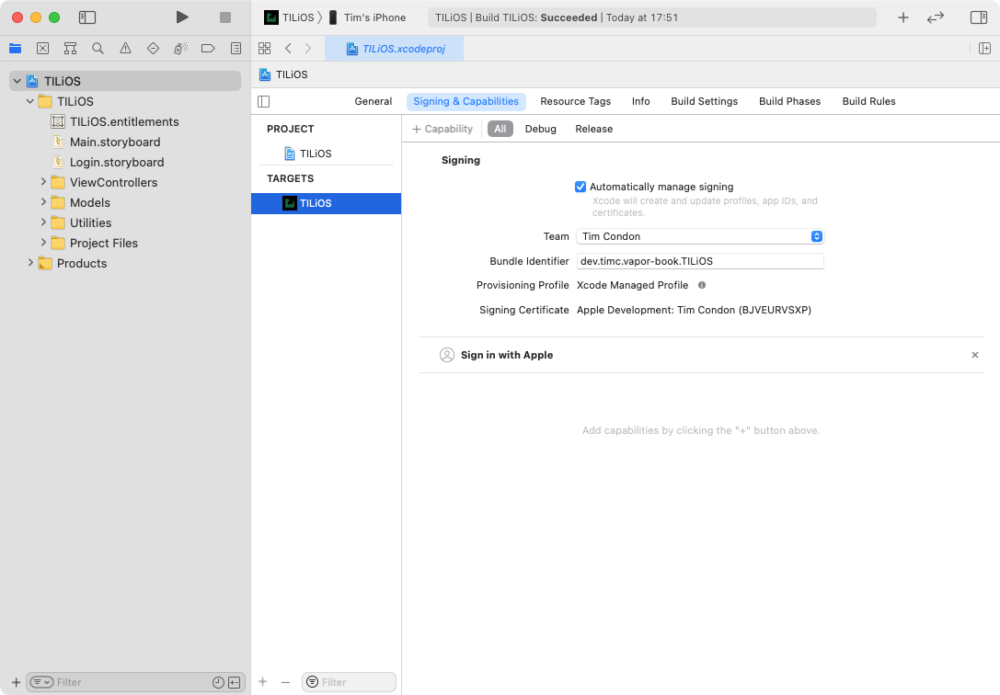
重要的是：用苹果登录在模拟器上不能可靠地工作，所以下面的步骤需要你在iOS设备上运行该应用程序。
在TILApp中，打开.env，在文件的底部添加以下内容：
IOS_APPLICATION_IDENTIFIER=<YOUR_BUNDLE_ID>
然后，在终端，重置数据库以适应User的新字段：
docker rm -f postgres
docker run --name postgres \
-e POSTGRES_DB=vapor_database \
-e POSTGRES_USER=vapor_username \
-e POSTGRES_PASSWORD=vapor_password \
-p 5432:5432 -d postgres
建立并运行Vapor应用程序。当防火墙询问你是否要接受外部连接时，点击Allow。
Vapor启动器项目允许外部连接。你在configure.swift中设置app.http.server.configuration.hostname = "0.0.0.0"。这允许来自任何IP地址的连接。
最后，在TILiOS中，打开ResourceRequest.swift并替换let apiHostname = "http://localhost:8080"以使用你机器的IP地址。例如：
let apiHostname = "http://192.168.1.70:8080"
在你的设备上建立并运行该应用程序。你会在登录屏幕上看到用Sign in with Apple的按钮：
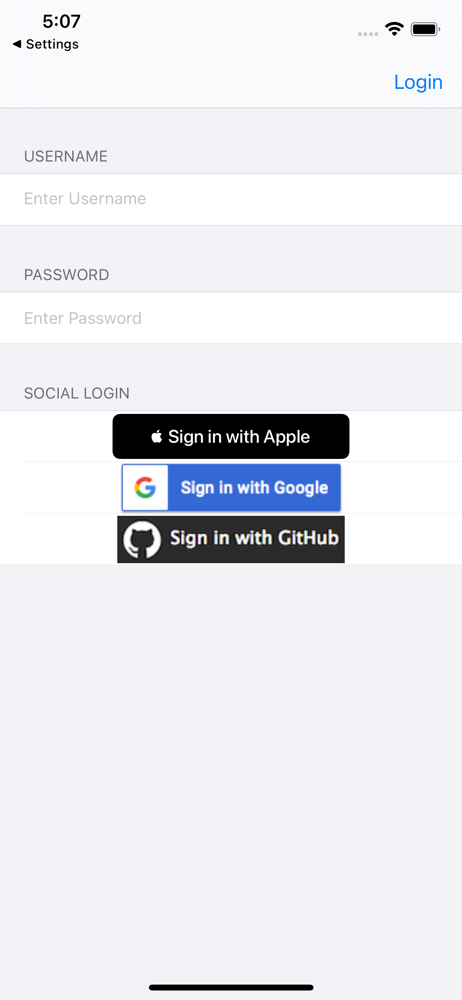
点击Sign in with Apple。你会看到出现用苹果登录表：
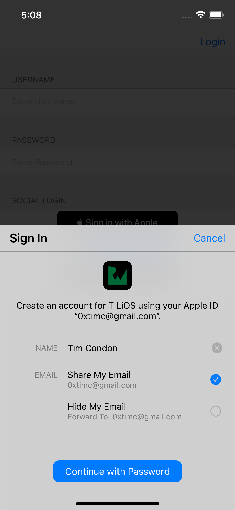
点击Share My Email，然后Continue或Continue with Password。输入你的密码或允许Face ID完成，应用程序就会让你登录!
Note
你在上述最后一步中看到的选项是你在哪台设备上测试的功能。
Tip
如果你需要为你正在测试的应用程序重新设置用苹果登录的状态，请参阅https://support.apple.com/en-us/HT210426，以获得指示。
整合Sign in with Apple到Web¶
由于苹果公司对安全的承诺，有一些额外的步骤你必须完成，以便在网络上测试与苹果的登录。
设置ngrok¶
在网页上用Apple登录只适用于HTTPS连接，Apple只会重定向到一个HTTPS地址。这对部署来说是很好的，但使本地测试变得更加困难。ngrok是一个创建公共URL的工具，你可以用它来连接到本地运行的服务。在你的浏览器中，访问https://ngrok.com，下载客户端并创建一个账户。
Note
你也可以用Homebrew安装ngrok。
接下来，前往https://dashboard.ngrok.com/，获得你的授权令牌。然后，在终端中，输入：
/Applications/ngrok authtoken <YOUR_TOKEN>
这样就用你的账户设置了客户端。然后，在终端中，输入：
/Applications/ngrok http 8080
这将创建一个HTTP隧道到你的Vapor应用程序。你会看到终端中列出的URL：
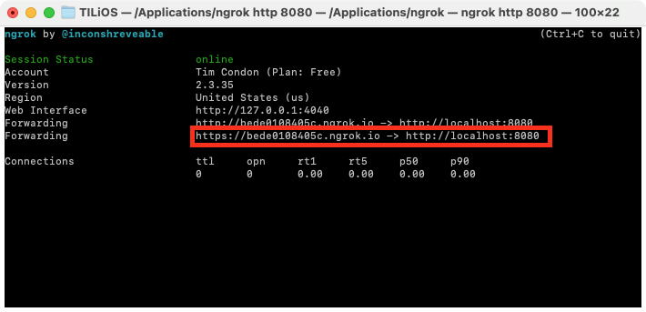
如果你在浏览器中访问这个URL，你会看到你的TIL网站!
设置网络应用程序¶
在网络上用苹果登录需要你在苹果公司配置一个service ID。进入https://developer.apple.com/account/，点击Certificates, Identifiers & Profiles。点击Identifiers，并点击+来创建一个新的标识符。在标识符类型下，选择Services ID并点击Continue：
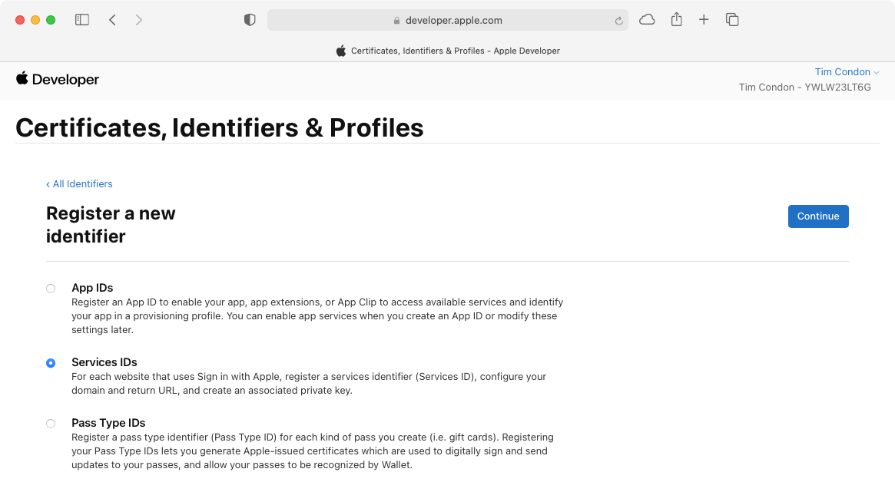
输入一个描述，然后为你的网站选择一个独特的标识符，类似于应用程序的捆绑标识符。点击Continue，然后点击Register：
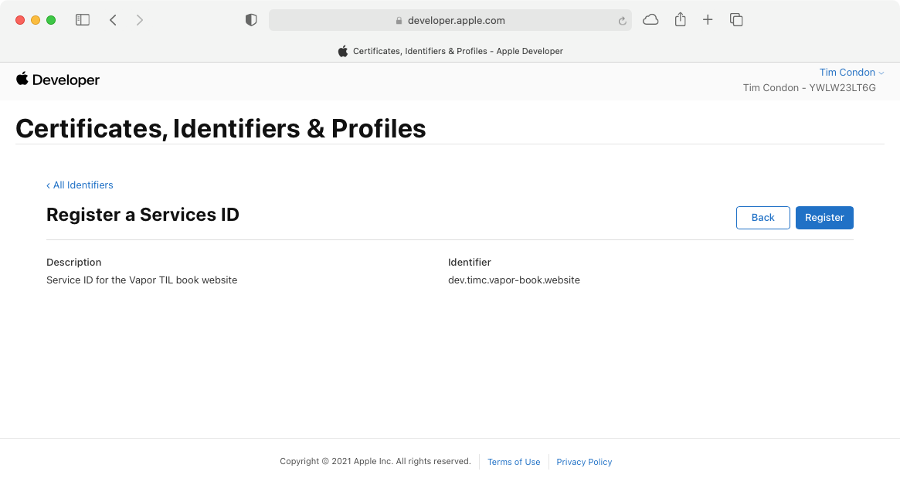
点击你的新标识符来配置它。点击Sign In with Apple旁边的复选框，然后点击Configure：
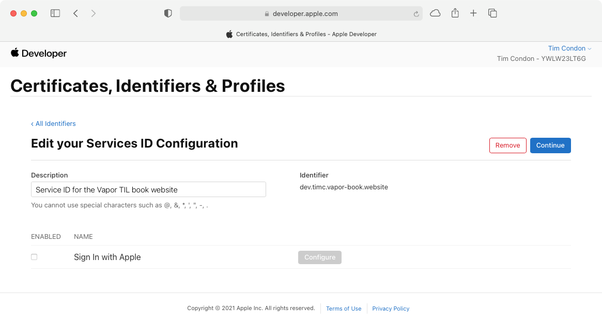
在Primary App ID下，选择TILiOS应用程序的标识符。在域名和子域名下，添加你的ngrok监听器的域名，例如：bede0108405c.ngrok.io。然后，在Return URLs下，添加https://URL：
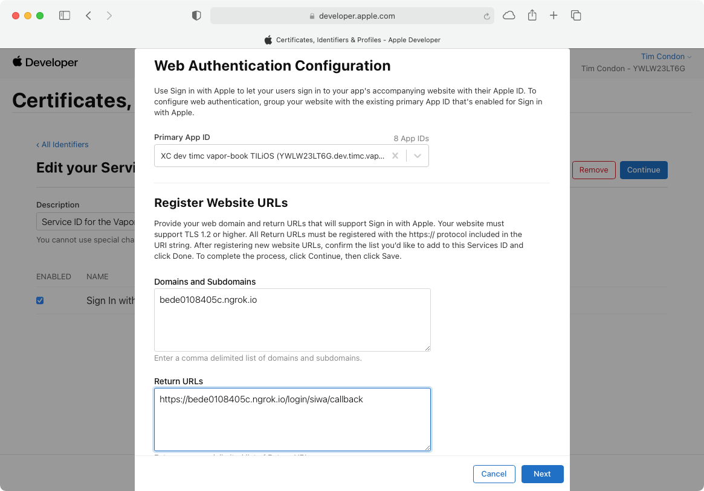
点击Next，然后点击Done。回到Edit your Services ID Configuration页面，点击Continue，然后Save。
设置Vapor¶
返回到Xcode中的Vapor TILApp项目，打开WebsiteController.swift。在文件的底部，添加以下内容：
struct AppleAuthorizationResponse: Decodable {
struct User: Decodable {
struct Name: Decodable {
let firstName: String?
let lastName: String?
}
let email: String
let name: Name?
}
let code: String
let state: String
let idToken: String
let user: User?
enum CodingKeys: String, CodingKey {
case code
case state
case idToken = "id_token"
case user
}
init(from decoder: Decoder) throws {
let values = try decoder.container(keyedBy: CodingKeys.self)
code = try values.decode(String.self, forKey: .code)
state = try values.decode(String.self, forKey: .state)
idToken =
try values.decode(String.self, forKey: .idToken)
if let jsonString =
try values.decodeIfPresent(String.self, forKey: .user),
let jsonData = jsonString.data(using: .utf8) {
self.user =
try JSONDecoder().decode(User.self, from: jsonData)
} else {
user = nil
}
}
}
这种Decodable类型与苹果在回调中发送的响应相匹配。它包含一些用户的可选数据，JWT和一个状态属性。接下来，在文件的底部，创建一个新的上下文，在回调后传递给Leaf：
struct SIWAHandleContext: Encodable {
let token: String
let email: String?
let firstName: String?
let lastName: String?
}
这包含了来自AppleAuthorizationResponse的数据，以一种更简单的格式供Leaf使用。接下来，在registerPostHandler(_:)下面创建一个新的路由处理程序，用于处理来自苹果的重定向：
func appleAuthCallbackHandler(_ req: Request)
throws -> EventLoopFuture<View> {
// 1
let siwaData =
try req.content.decode(AppleAuthorizationResponse.self)
// 2
guard
let sessionState = req.cookies["SIWA_STATE"]?.string,
!sessionState.isEmpty,
sessionState == siwaData.state
else {
req.logger
.warning("SIWA does not exist or does not match")
throw Abort(.unauthorized)
}
// 3
let context = SIWAHandleContext(
token: siwaData.idToken,
email: siwaData.user?.email,
firstName: siwaData.user?.name?.firstName,
lastName: siwaData.user?.name?.lastName)
// 4
return req.view.render("siwaHandler", context)
}
以下是新路由的作用：
- 将请求主体解码为
AppleAuthorizationResponse。 - 从一个名为
SIWA_STATE的cookie中获取会话状态。确保它与AppleAuthorizationResponse的状态相匹配。如果不匹配，则返回一个401 Unauthorized错误。 - 为
Leaf创建上下文。 - 使用提供的上下文渲染
siwaHandler模板。
在boot(routes:)下面authSessionsRoutes.post("register", use: registerPostHandler)中注册路由，添加以下内容：
authSessionsRoutes.post(
"login",
"siwa",
"callback",
use: appleAuthCallbackHandler)
这就把一个POST请求发送到/login/siwa/callback--你在苹果公司注册的URL--到appleAuthCallbackHandler(_:)。
在Resources/Views中为Leaf模板创建一个名为siwaHandler.leaf的新文件。打开这个新文件，插入以下内容：
<!-- 1 -->
<!doctype html>
<html lang="en" class="h-100">
<head>
<meta charset="utf-8">
<meta name="viewport"
content="width=device-width, initial-scale=1">
<title>Sign In With Apple</title>
<!-- 2 -->
<script>
// 3
function handleCallback() {
// 4
const form = document.getElementById("siwaRedirectForm")
// 5
form.style.display = 'none';
// 6
form.submit();
}
// 7
window.onload = handleCallback;
</script>
</head>
<body class="d-flex flex-column h-100">
<!-- 8 -->
<form action="/login/siwa/handle" method="POST"
id="siwaRedirectForm">
<!-- 9 -->
<input type="hidden" name="token" value="#(token)">
<input type="hidden" name="email" value="#(email)">
<input type="hidden" name="firstName"
value="#(firstName)">
<input type="hidden" name="lastName"
value="#(lastName)">
<!-- 10 -->
<input type="submit"
value="If nothing happens click here">
</form>
</body>
</html>
这个文件不像其他文件那样使用base.leaf，因为用户不会看到这些内容。以下是该模板的作用：
- 为重定向创建一个基本的
HTML 5页面。 - 在页面中嵌入一些
JavaScript代码。 - 定义一个
JavaScript函数handleCallback()。 - 使用标识符
siwaRedirectForm从页面上获取表单。 - 将表单的显示设置为
none--这将隐藏表单，使其不可见。 - 自动提交表单。
- 当页面加载时，触发
handleCallback()。 - 定义一个表单，向
/login/siwa/handle发送一个POST请求。设置表单ID为siwaRedirectForm，这样JavaScript代码就能找到它。 - 添加一些隐藏字段，包含来自回调的数据。
- 添加一个提交按钮。这允许用户在
JavaScript加载失败时手动提交表单。
你可能想知道--为什么要费心重定向？毕竟，这段代码会重定向到/login/siwa/handle。这就是你需要注册或登录用户的地方？为什么不在这里做这个？
现代浏览器在cookie中使用一个叫做SameSite的标志。除非你把cookie的SameSite标志设置为none，否则浏览器不会在来自不同域的POST请求中向服务器发送cookie。这意味着你不能从回调处理程序中访问任何会话数据，因为请求来自苹果的域。如果不这样做，你就不能登录用户。你可以通过在一个特殊的页面上设置一个特殊的cookie来解决这个问题，浏览器将把这个cookie发送到服务器上。然后你可以重定向到真正的登录页面。由于这个重定向来自同一个域，浏览器将发送会话cookie，使你能够完成登录。
在Xcode中，在WebsiteController.swift的底部，添加一个新的类型来表示新表单发送的数据：
struct SIWARedirectData: Content {
let token: String
let email: String?
let firstName: String?
let lastName: String?
}
然后，在文件的顶部import Vapor下面，添加：
import Fluent
这使你可以使用Fluent的查询。接下来，在appleAuthCallbackHandler(_:)下面创建一个新的路由处理程序，用于重定向：
func appleAuthRedirectHandler(_ req: Request)
throws -> EventLoopFuture<Response> {
// 1
let data = try req.content.decode(SIWARedirectData.self)
// 2
guard let appIdentifier =
Environment.get("WEBSITE_APPLICATION_IDENTIFIER") else {
throw Abort(.internalServerError)
}
return req.jwt
.apple
.verify(data.token, applicationIdentifier: appIdentifier)
.flatMap { siwaToken in
User.query(on: req.db)
.filter(\.$siwaIdentifier == siwaToken.subject.value)
.first()
.flatMap { user in
let userFuture: EventLoopFuture<User>
if let user = user {
userFuture = req.eventLoop.future(user)
} else {
// 3
guard
let email = data.email,
let firstName = data.firstName,
let lastName = data.lastName
else {
return req.eventLoop
.future(error: Abort(.badRequest))
}
// 4
let user = User(
name: "\(firstName) \(lastName)",
username: email,
password: UUID().uuidString,
siwaIdentifier: siwaToken.subject.value)
userFuture = user.save(on: req.db).map { user }
}
// 5
return userFuture.map { user in
// 6
req.auth.login(user)
// 7
return req.redirect(to: "/")
}
}
}
}
这个方法类似于iOS应用程序的signInWithApple(_:)。不同之处在于：
- 将请求体解码为
SIWARedirectData。 - 从环境变量中获取应用程序的标识符。这是一个与
iOS应用不同的应用标识符。 - 请求体包含用户的名字和姓氏，作为独立的组件。确保请求数据包含新用户的两个组件。
- 从请求数据中创建一个新的
User。结合firstName和lastName来创建name。 - 从未来获取已解决的用户。这使用了
map(_:)而不是flatMap(_:)，因为闭包返回一个非future。 - 将用户登录到网站，以备将来的请求。
- 重定向到主页。
在boot(routes:)下注册新的路由authSessionsRoutes.post("login", "siwa", "callback", use: appleAuthCallbackHandler)：
authSessionsRoutes.post(
"login",
"siwa",
"handle",
use: appleAuthRedirectHandler)
这将一个POST请求路由到/login/siwa/handler--表单重定向的URL--到`appleAuthRedirectHandler(_:)'。
最后，你需要在登录和注册页面上显示Sign in with Apple按钮。在文件的底部，为Sign in with Apple所需的数据添加一个新类型：
struct SIWAContext: Encodable {
let clientID: String
let scopes: String
let redirectURI: String
let state: String
}
这有创建Sign in with Apple按钮所需的属性。接下来，用以下内容替换LoginContext：
struct LoginContext: Encodable {
let title = "Log In"
let loginError: Bool
let siwaContext: SIWAContext
init(loginError: Bool = false, siwaContext: SIWAContext) {
self.loginError = loginError
self.siwaContext = siwaContext
}
}
这将新的上下文添加到LoginContext中。接下来，在appleAuthRedirectHandler(_:)下面，添加一个新方法来创建SIWAContext：
private func buildSIWAContext(on req: Request)
throws -> SIWAContext {
// 1
let state = [UInt8].random(count: 32).base64
// 2
let scopes = "name email"
// 3
guard let clientID =
Environment.get("WEBSITE_APPLICATION_IDENTIFIER") else {
req.logger.error("WEBSITE_APPLICATION_IDENTIFIER not set")
throw Abort(.internalServerError)
}
// 4
guard let redirectURI =
Environment.get("SIWA_REDIRECT_URL") else {
req.logger.error("SIWA_REDIRECT_URL not set")
throw Abort(.internalServerError)
}
// 5
let siwa = SIWAContext(
clientID: clientID,
scopes: scopes,
redirectURI: redirectURI,
state: state)
return siwa
}
下面是这个新功能的作用：
- 创建一个随机状态，类似于创建一个新的
token值。 - 定义你的应用程序所需的作用域。你需要姓名和电子邮件。
- 从环境变量中获取客户端
ID，否则会抛出一个500 Internal Server Error。这与你的网站应用标识符相同。 - 从环境变量中获取重定向的
URL，否则抛出一个500 Internal Server Error。 - 创建
SIWAContext并返回。
接下来，将loginHandler(_:)的返回类型改为：
func loginHandler(_ req: Request)
throws -> EventLoopFuture<Response> {
你需要将View转换为Response，以便设置特殊的cookie。你还需要用新的代码抛出错误。接下来，将loginHandler(_:)的主体替换为以下内容：
let context: LoginContext
// 1
let siwaContext = try buildSIWAContext(on: req)
if let error = req.query[Bool.self, at: "error"], error {
context = LoginContext(
loginError: true,
siwaContext: siwaContext)
} else {
context = LoginContext(siwaContext: siwaContext)
}
// 2
return req.view
.render("login", context)
.encodeResponse(for: req)
.map { response in
// 3
let expiryDate = Date().addingTimeInterval(300)
// 4
let cookie = HTTPCookies.Value(
string: siwaContext.state,
expires: expiryDate,
maxAge: 300,
isHTTPOnly: true,
sameSite: HTTPCookies.SameSitePolicy.none)
// 5
response.cookies["SIWA_STATE"] = cookie
// 6
return response
}
以下是新代码的作用：
- 从请求中建立
SIWAContext，并将其传递给LoginContext。 - 使用
encodeResponse(for:)将EventLoopFuture<View>转换为EventLoopFuture<Response>。 - 创建一个
future 5分钟的到期日。 - 用
buildSIWAContext(on:)中创建的状态创建一个新的cookie。注意sameSite被设置为.none，这样服务器就会在重定向时发送cookie。 - 在响应中使用
SIWA_STATE作为名称来设置cookie。这与你在appleAuthCallbackHandler(_:)中寻找的名字相同。 - 返回响应。
接下来，改变loginPostHandler(_:)的签名，允许你抛出错误：
func loginPostHandler(_ req: Request)
throws -> EventLoopFuture<Response> {
接下来，将loginPostHandler(_:)中的else块替换为以下内容：
let siwaContext = try buildSIWAContext(on: req)
let context = LoginContext(
loginError: true,
siwaContext: siwaContext)
return req.view
.render("login", context)
.encodeResponse(for: req)
.map { response in
let expiryDate = Date().addingTimeInterval(300)
let cookie = HTTPCookies.Value(
string: siwaContext.state,
expires: expiryDate,
maxAge: 300,
isHTTPOnly: true,
sameSite: HTTPCookies.SameSitePolicy.none)
response.cookies["SIWA_STATE"] = cookie
return response
}
这与loginHandler(_:)中使用的代码相同。它对LoginContext中的必要属性进行编码，并在登录失败时设置cookie。
接下来，将RegisterContext替换为以下内容：
struct RegisterContext: Encodable {
let title = "Register"
let message: String?
let siwaContext: SIWAContext
init(message: String? = nil, siwaContext: SIWAContext) {
self.message = message
self.siwaContext = siwaContext
}
}
这就把SIWAContext作为RegisterContext的一个属性，这样你就可以在注册页面上显示Sign in with Apple按钮。接下来，将registerHandler(_:)的签名替换为以下内容：
func registerHandler(_ req: Request)
throws -> EventLoopFuture<Response> {
这就把返回类型改为EventLoopFuture<Response>，这样你就可以设置cookie并抛出错误。接下来，将registerHandler(_:)的主体改为：
let siwaContext = try buildSIWAContext(on: req)
let context: RegisterContext
if let message = req.query[String.self, at: "message"] {
context = RegisterContext(
message: message,
siwaContext: siwaContext)
} else {
context = RegisterContext(siwaContext: siwaContext)
}
return req.view
.render("register", context)
.encodeResponse(for: req)
.map { response in
let expiryDate = Date().addingTimeInterval(300)
let cookie = HTTPCookies.Value(
string: siwaContext.state,
expires: expiryDate,
maxAge: 300,
isHTTPOnly: true,
sameSite: HTTPCookies.SameSitePolicy.none)
response.cookies["SIWA_STATE"] = cookie
return response
}
这些变化与loginHandler(_:)中的变化是相同的。它们确保你向Leaf传递你所需要的一切，以便在注册页面上显示Sign in with Apple按钮。
打开Resources/Views/login.leaf。在content块的底部，在#endexport上面，添加以下内容：
<!-- 1 -->
<div id="appleid-signin" class="signin-button"
data-color="black" data-border="true"
data-type="sign in"></div>
<!-- 2 -->
<script type="text/javascript"
src="https://appleid.cdn-apple.com/appleauth/static/jsapi/appleid/1/en_US/appleid.auth.js"></script>
<!-- 3 -->
<script type="text/javascript">
AppleID.auth.init({
clientId : '#(siwaContext.clientID)',
scope : '#(siwaContext.scopes)',
redirectURI : '#(siwaContext.redirectURI)',
state : '#(siwaContext.state)',
usePopup : false
});
</script>
以下是代码的作用：
- 定义一个
<div>来包含Sign in with Apple按钮。 - 从苹果公司导入
Sign in with Apple JavaScript文件。这将为你处理网页上的所有逻辑。 - 初始化
AppleID.Auth以创建一个Sign in with Apple按钮。这使用了SIWAContext的值。
接下来，打开Resources/Views/register.leaf，在下面添加同样的代码</form>：
<!-- 1 -->
<div id="appleid-signin" class="signin-button"
data-color="black" data-border="true"
data-type="sign in"></div>
<!-- 2 -->
<script type="text/javascript"
src="https://appleid.cdn-apple.com/appleauth/static/jsapi/appleid/1/en_US/appleid.auth.js"></script>
<!-- 3 -->
<script type="text/javascript">
AppleID.auth.init({
clientId : '#(siwaContext.clientID)',
scope : '#(siwaContext.scopes)',
redirectURI : '#(siwaContext.redirectURI)',
state : '#(siwaContext.state)',
usePopup : false
});
</script>
最后，打开Public/styles/style.css，在文件的底部添加以下内容：
undefined
这为按钮添加了一些样式，使其在页面上看起来很美观。
在文本编辑器中打开.env，在文件的末尾添加以下变量：
WEBSITE_APPLICATION_IDENTIFIER=<YOUR_WEBSITE_IDENTIFIER>
SIWA_REDIRECT_URL=https://<YOUR_NGROK_DOMAIN>/login/siwa/callback
这些与你在苹果开发者门户中创建服务ID时提供的值一致。构建并运行该应用程序，并进入https://Register，你会看到新的Sign in with Apple按钮。
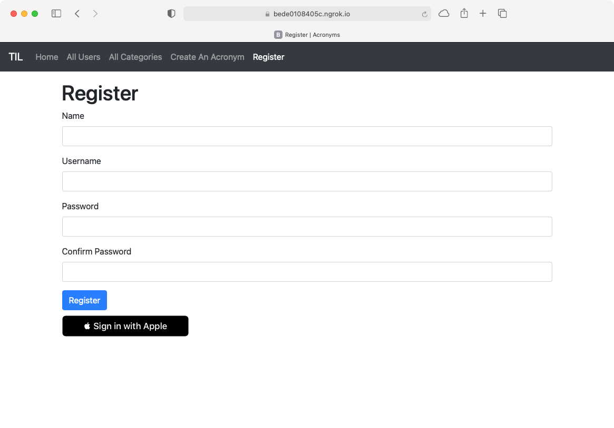
Note
你必须使用ngrok URL而不是localhost，否则重定向将不能正确工作。
该按钮也出现在登录页面上。点击Sign in with Apple按钮。在Safari浏览器上，浏览器将提示你输入你的系统密码--你在Mac上用来登录的密码--以授权与Sign in with Apple：
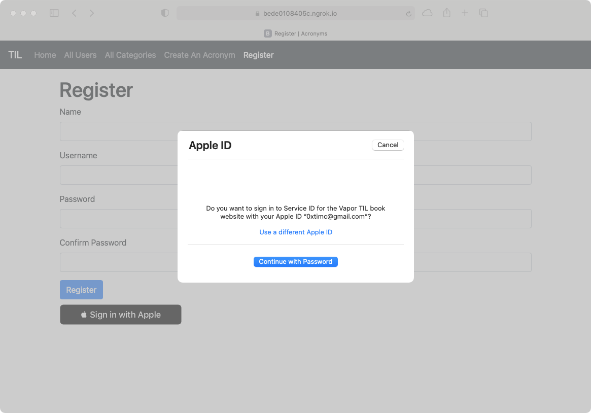
在Chrome浏览器上，该应用程序将重定向你，让你在苹果网站上登录你的Apple ID来进行登录：
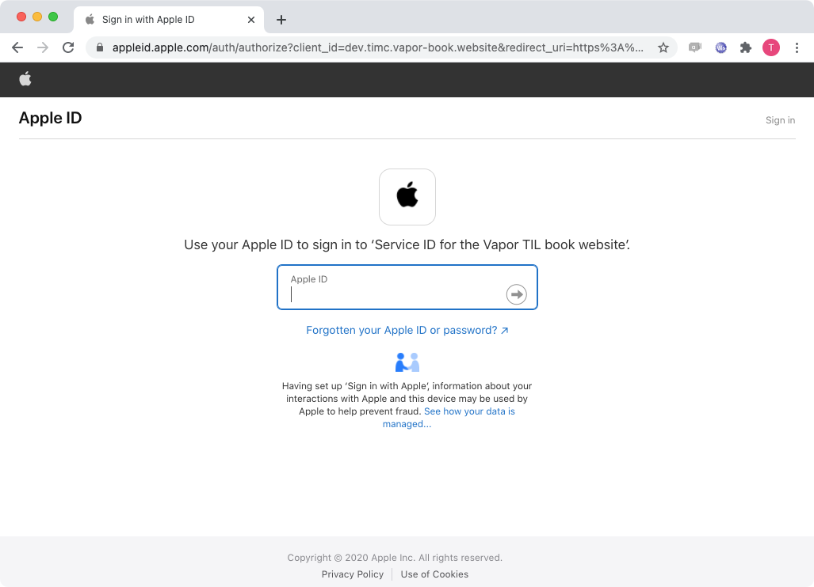
完成你所选择的浏览器的登录过程，该应用程序将用你的苹果ID登录!
接下来去哪？¶
在这一章中，你学到了如何在你的iOS应用和网站中整合Sign in with Apple。这是对第一方和外部登录体验的补充。它允许你的用户选择一系列的认证选项。
在下一章，你将学习如何与第三方电子邮件提供商整合。你将使用另一个社区包并学习如何发送电子邮件。为了证明这一点，你将在你的应用程序中实现一个密码重置流程，以防用户忘记他们的密码。